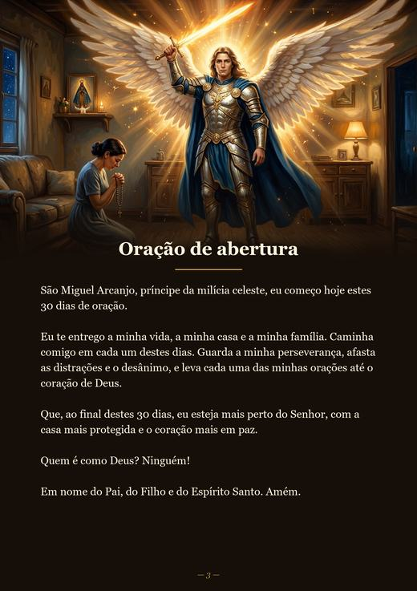
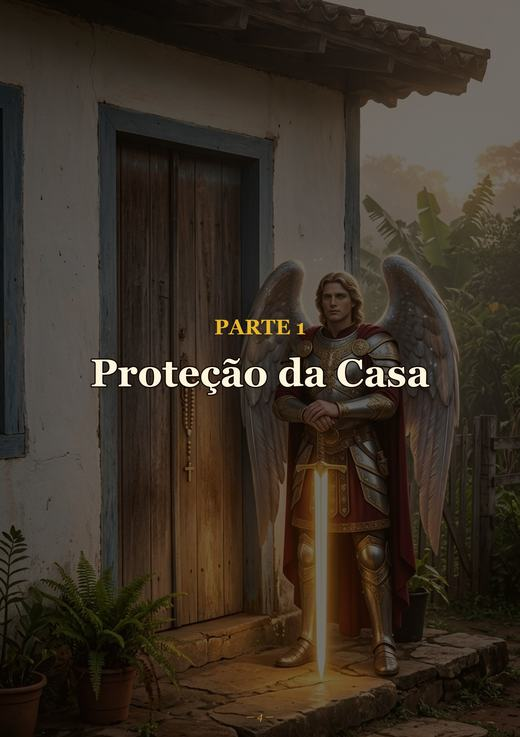
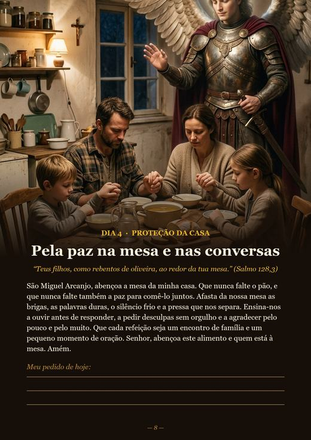
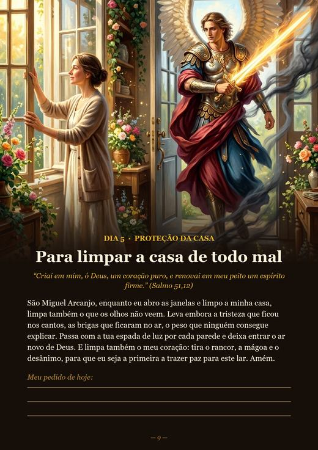
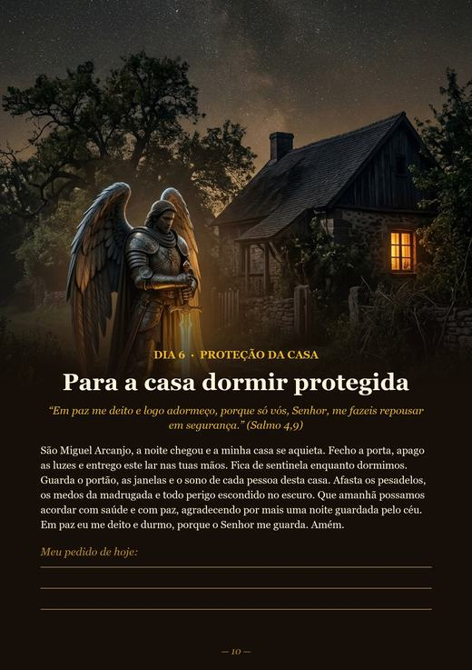
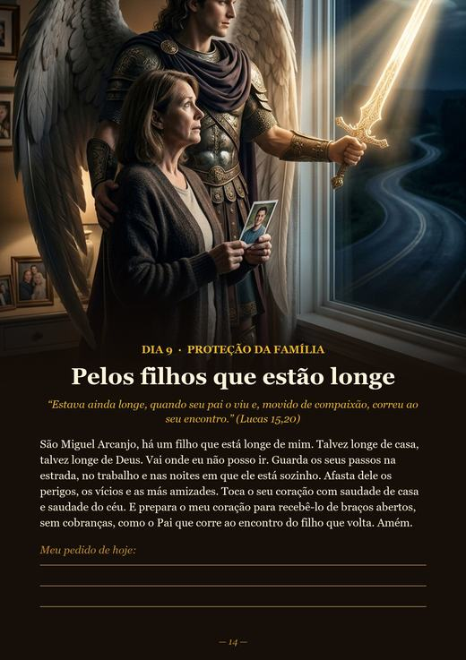
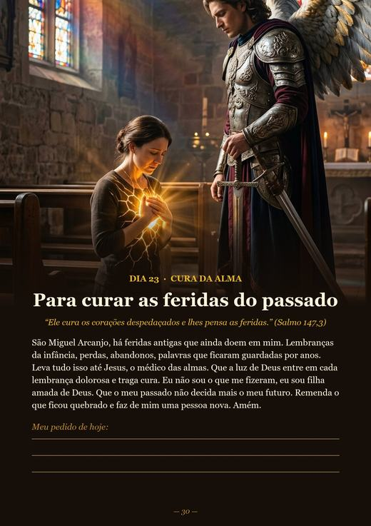

Uma oração por dia para proteger a sua casa, a sua família e o seu coração.
QUERO COMEÇAR MEUS 30 DIASAcesso imediato no seu e-mailTodos os dias você reza uma oração sobre um tema da vida real: a porta de casa, os filhos que estão longe, um exame médico, as dívidas, a ansiedade, uma decisão importante.
São poucos minutos por dia. Cada oração traz um versículo da Bíblia e um espaço “Meu pedido de hoje” para você escrever o nome de quem ama.







← arraste para ver mais páginas →
Garantia de 7 dias. Se não gostar do livro, é só pedir o reembolso pela Hotmart dentro de 7 dias e você recebe 100% do valor de volta, sem perguntas.
Não. É um livro digital (PDF). Você recebe o acesso no seu e-mail logo depois da compra e pode ler no celular ou imprimir em casa.
Não é obrigatório, mas ajuda a criar o hábito. São poucos minutos por dia. Se perder um dia, é só continuar de onde parou.
Pode. Cada oração tem o espaço “Meu pedido de hoje” para você escrever o nome de quem quer entregar à proteção de São Miguel.
Pela Hotmart, com Pix, boleto ou cartão. Pagamento único, sem mensalidade.
Você tem 7 dias de garantia. Pede o reembolso pela Hotmart e recebe todo o valor de volta.